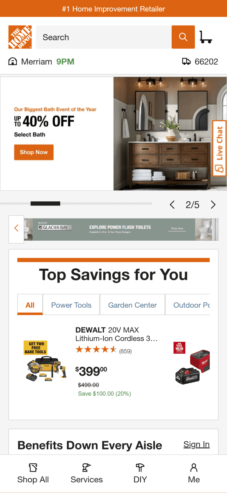
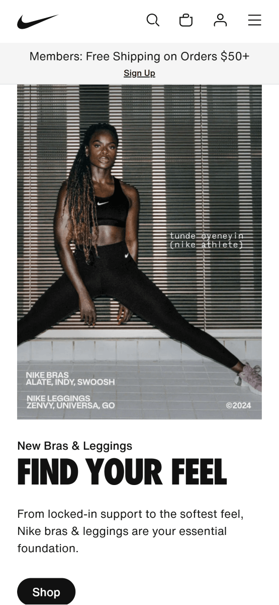

Rule of Thirds
Home Depot
homedepot.com I believe that Home Depot does a good job of using the rule of thirds. On their site the users attention is drawn to four main points. First the discount, second a product, third a product and finally a link to shop the products.
Alignment
Tracksmith
tracksmith.comTracksmith is a good example of alignment because they draw all of the users attention to the center of the page. The center of the page is where they are introducing their new theme. All the text here in the center of the page is center aligned and in the center of the screen.
Hick's Law
Nike
nike.com Nike is a pretty good example of Hick's Law. Each area has a minimal amount of choices it is presenting to the user. The header has 4 initial choices. Search, Cart, Account, Menu. From there the user can expand to get more choices but initially it is a paired down menu that allows the user to quickly decide what they want to do.